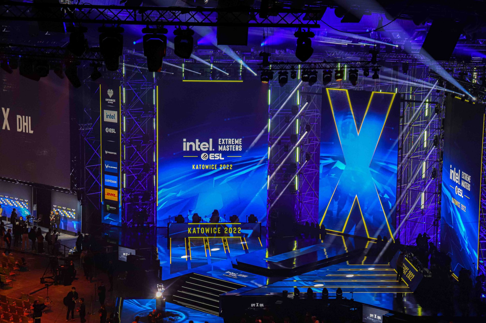

Understanding the new PGL anti-withdrawal rules
The organizers at PGL have officially updated their rulebook to include anti-withdrawal fines. These penalties are specifically designed to target teams that pull out of a competition after the official registration or qualification phase has concluded. By attaching a monetary cost to withdrawals, PGL hopes to discourage organizations from treating tournament slots as optional commitments.
In the past, the esports industry has seen numerous instances where top-tier teams withdrew from events due to scheduling conflicts or internal roster disputes. This often leaves tournament organizers scrambling to find replacements, which can lower the quality of the competition and frustrate the viewing audience who tuned in to see specific star players.
The drive toward a more professional scene
PGL has stated explicitly that these changes are being implemented to create a more professional scene. For esports to be taken seriously alongside traditional sports like basketball or soccer, there must be a level of accountability regarding participation. When a team signs a contract to compete, the expectation is that they will be present on the server regardless of minor internal hurdles.
This is done to create a more professional scene and ensure that the integrity of our competitions remains intact for the fans and sponsors.
Professionalism in this context means more than just skill; it refers to the operational reliability of the organizations. By enforcing these fines, PGL is pushing teams to better manage their calendars and commitments, ensuring that the advertised matchups actually take place.
Impact on teams and tournament organizers
For the teams, this means that the decision to enter a tournament is now a high-stakes commitment. Organizations will need to be more diligent about their player health, visa applications, and scheduling. A sudden withdrawal could now result in a significant financial loss that outweighs the benefits of skipping the event.
Organizers benefit from a guaranteed lineup, which allows them to market the event more effectively. When a marquee team drops out at the eleventh hour, it damages the brand of the tournament and can lead to a drop in viewership numbers.
Comparing PGL to other esports regulations
While some other tournament organizers have had informal agreements or small penalties for withdrawals, PGL is codifying this into a formal rulebook. This sets a precedent that other organizers may follow. As the ecosystem matures, the transition from a loose community-driven structure to a corporate sports model becomes inevitable.
Critics argue that some withdrawals are unavoidable, such as medical emergencies or sudden visa denials. However, PGL is expected to evaluate these cases on an individual basis, distinguishing between legitimate crises and poor organizational planning.
What this means for the future of competitive gaming
The introduction of these fines signals a shift toward a more rigid, professionalized era of gaming. We are seeing a trend where the players are treated as professional athletes with strict obligations. This evolution is necessary for the long-term sustainability of the industry, as it provides a safer environment for investors and sponsors.
As the scene becomes more stable, fans can expect fewer disappointments and more consistent high-level play. This reliability is key to growing the global audience and ensuring that the competitive spirit of the game is preserved.
Staying updated with the pro scene
Keeping track of these rule changes is essential for anyone following the professional circuit. Whether it is new financial penalties or shifting meta strategies, the landscape of competitive gaming moves fast. Understanding these dynamics helps fans appreciate the struggle and the discipline required to compete at the highest level.
For those who enjoy tracking individual player performance amid these organizational shifts, it is a great time to look at how players are performing in current events. For instance, you can see how w0nderful and b1t Rise in IEM Beijing Fantasy Picks to get a better idea of who the current power players are in the scene.
See Also
If you enjoyed this Esports News article, check out w0nderful and b1t Rise in IEM Beijing Fantasy Picks for more useful reading.